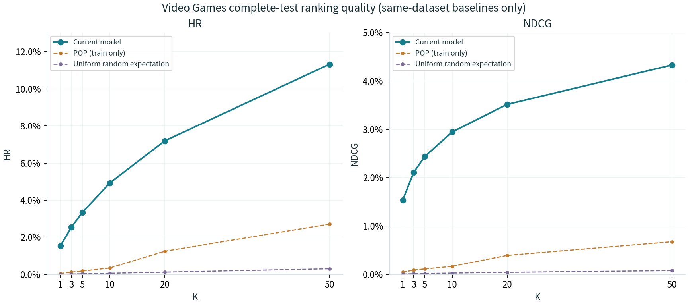
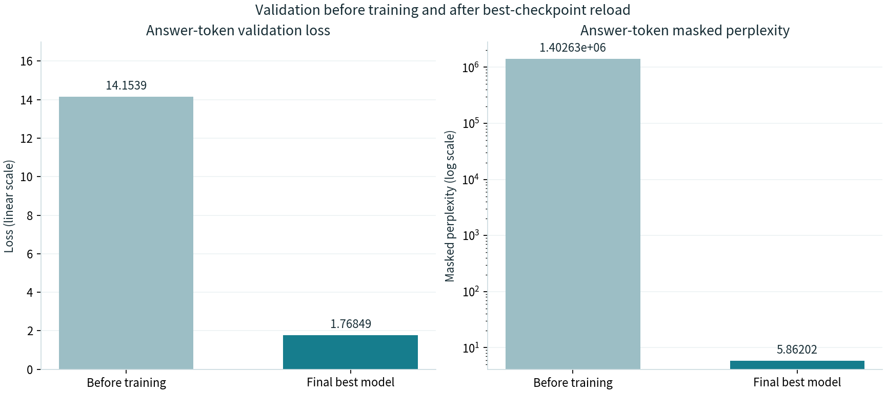
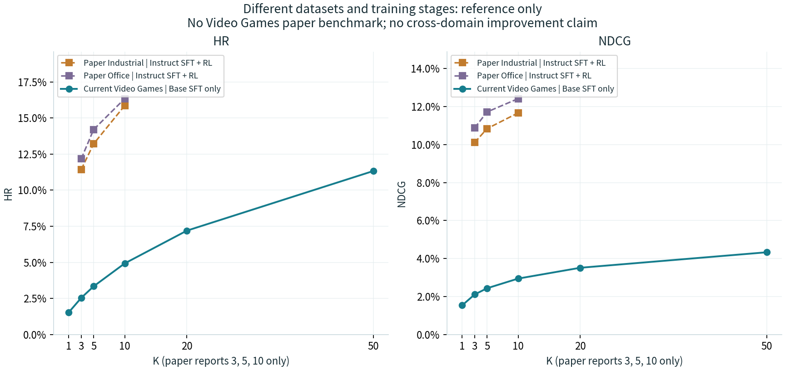

SFT 结果验证报告
检查通过 更新于 2026-11-16T14:41:57.312583+08:00（北京时间）
结果概览
完整测试集已通过验证，共 41924 条样本；HR@10 为 4.928%，NDCG@10 为 2.946%。
最佳模型的答案 token loss：14.1539 → 1.76849，变化 -87.51%。
答案 token masked perplexity：1.40263e+06 → 5.86202。
完整性与生成检查
| 检查 | 实际值 |
|---|---|
| 预期测试样本 | 41924 |
| 已完成测试样本 | 41924 |
| 缺失 / 重复处理行 | [0, 0] |
| SID 有效率 | 100.000% |
| 每条候选唯一率 | 100.000% |
| 无效候选数 CC | 0 |
| 模型 / 来源检查 | 状态 |
|---|---|
| provenance | passed |
| prepared_input_hashes | passed |
| checkpoint_reload | passed |
| tokenizer_atomic_sid_tokens | passed |
| model_vocabulary | passed |
| validation_coverage | passed |
| prediction_coverage | passed |
| valid_sids | passed |
| unique_candidates | passed |
推荐效果
| K | HR@K | NDCG@K |
|---|---|---|
| 1 | 1.538% | 1.538% |
| 3 | 2.538% | 2.109% |
| 5 | 3.339% | 2.437% |
| 10 | 4.928% | 2.946% |
| 20 | 7.196% | 3.516% |
| 50 | 11.328% | 4.332% |
每条测试行只有一个目标商品，因此本协议下 HR@K 等于 Recall@K。指标按原测试行计算，保留原重复交互及其权重；测试集不参与最优 checkpoint 选择。SID 合法性由候选目录约束保证，不等同于模型推荐准确率。
HR / NDCG 随 K 的变化

仅在完整结果验证通过后绘制最终指标；尚未通过时显示实际状态。
训练前后验证集对照
| 阶段 | 仅答案 token loss | masked perplexity | 答案 token 数 |
|---|---|---|---|
| 训练前 | 14.1539 | 1.40263e+06 | 251538 |
| 最终最佳模型 | 1.76849 | 5.86202 | 251538 |
prompt 与 padding 标签被 mask，只统计答案 token；这里的 perplexity 不是通用语言困惑度。
训练前后验证指标图

loss 使用线性坐标；masked perplexity 单独使用对数坐标，柱上标注实际数值。完整验证通过且前后观测齐全时绘制。
与原论文的可比性
原论文没有 Video Games 结果；不同数据域、Base/Instruct、SFT/RL 阶段及 SID 等设置只可作背景参照，不能据此计算复现提升或判定复现成功。
来源：MiniOneRec: An Open-Source Framework for Scaling Generative Recommendation；arXiv:2510.24431v1 (2025-10-28)，["Table 1", "Section 4", "Section 5.1", "Appendix B / Table 4"]。
Section 4 specifies the backbone family; Table 1 does not identify a unique parameter count. Do not assume it is matched to this run's 1.5B Base model.
| 设置 | 本次实际配置 | 原论文 | 关系 | 说明 |
|---|---|---|---|---|
| 数据集 | Video_Games | Industrial, Office | different | |
| 生成底模 | /mnt/ossdata/ziweizhao/weights/Qwen2.5-1.5B | Qwen2.5-Instruct | different | |
| 训练阶段 | SFT only; RL not started | SFT + GRPO RL (2 epochs) | different | |
| 最大历史长度 | 20 | 10 | different | |
| SID checkpoint / 训练预算 | 2900 | 10000 | different | selected quantizer epoch vs paper quantizer training budget |
| SFT 学习率调度 | linear | cosine | different | |
| SFT 最大 epoch | 10 | 10 | matched | |
| SFT 学习率 | 0.0003 | 0.0003 | matched |
实际结果与论文参考值
| 来源 | 数据域 | 阶段 | K | HR@K | NDCG@K |
|---|---|---|---|---|---|
| Current experiment | Video_Games | SFT only; RL not started | 1 | 1.538% | 1.538% |
| Current experiment | Video_Games | SFT only; RL not started | 3 | 2.538% | 2.109% |
| Current experiment | Video_Games | SFT only; RL not started | 5 | 3.339% | 2.437% |
| Current experiment | Video_Games | SFT only; RL not started | 10 | 4.928% | 2.946% |
| Current experiment | Video_Games | SFT only; RL not started | 20 | 7.196% | 3.516% |
| Current experiment | Video_Games | SFT only; RL not started | 50 | 11.328% | 4.332% |
| Paper Table 1; reference only | Industrial | SFT + GRPO RL (2 epochs) | 3 | 11.430% | 10.110% |
| Paper Table 1; reference only | Industrial | SFT + GRPO RL (2 epochs) | 5 | 13.210% | 10.840% |
| Paper Table 1; reference only | Industrial | SFT + GRPO RL (2 epochs) | 10 | 15.860% | 11.670% |
| Paper Table 1; reference only | Office | SFT + GRPO RL (2 epochs) | 3 | 12.170% | 10.880% |
| Paper Table 1; reference only | Office | SFT + GRPO RL (2 epochs) | 5 | 14.200% | 11.720% |
| Paper Table 1; reference only | Office | SFT + GRPO RL (2 epochs) | 10 | 16.340% | 12.420% |
论文只发表 K=3、5、10；不补造或插值 K=1、20、50，也不计算跨数据域提升百分比。

虚线为论文 Industrial / Office 完整训练流程；实线为本次 Video Games SFT。不同数据域与阶段，只作参考。
本次四类任务的配比见训练配置，论文另包含描述 / 偏好等对齐任务。不同任务、tokenizer、mask 和加权口径下的 loss 不设跨论文数值目标；训练前后只比较本次最终验证的同口径答案 token 加权 loss。
是否符合预期
评估曲线一致性检查：通过。
预先指定 K=10：模型 HR=4.928% / NDCG=2.946%；POP=0.346% / 0.166%；均匀随机期望=0.060% / 0.027%。
优化与评估检查通过；这不表示行为冷组推荐能力通过验证，能力结论须结合下方事后分层结果。
超过 POP / 随机仅是最低学习信号检查；所有差值均为描述性比较，不代表统计显著或论文复现成功。
| 数值诊断 | 通过 |
|---|---|
| HR_nondecreasing | True |
| NDCG_nondecreasing | True |
| NDCG_not_above_HR | True |
| HR1_equals_NDCG1 | True |
行为迁移与条件召回（事后诊断）
本节是事后探索性分层，沿用同一批完整目录约束 beam=50 预测，不筛选候选目录、不重排、不改变总体指标或预先指定的 K=10。
测试目标在训练行为（历史及目标）中未出现的比例为 25.289%；重复上一商品的比例由训练 5.370% 变为测试 1.209%。
行为冷组 10602 条：HR@10=0.000%，HR@50=0.00943%；行为暖组 31322 条：HR@10=6.596%。总体值是这些组按原行数加权的混合，不能替代各组能力结论。
行为冷不等于模型完全未见商品：666 个行为冷商品中，SID→标题对齐覆盖 666 个，标题→SID 覆盖 663 个。
模型 Top1 复制上一商品的比例为 18.157%，真实重复末项比例为 1.209%；复制预测的正确率为 4.440%，其贡献了全部 Top1 命中的 52.403%。
行为冷商品仅占全部生成候选位置的 0.02013%，候选中覆盖 81 个不同行为冷商品。目录可生成性不等于实际召回覆盖。
全局 POP 在行为冷目标上缺少行为支持，时间和行为分布迁移也可能削弱其表现；超过 POP 的倍数不是推荐竞争力或泛化质量的证明，不能把差异单独归因于时间迁移。
分层是描述性诊断，尚无匹配的强序列基线、训练前同协议排名对照或多种子置信区间，不能作因果或显著性结论。
| 分层 | 原始行数 | 占比 | 模型 HR@1 | 模型 HR@10 | 模型 NDCG@10 | 模型 HR@50 | POP HR@10 |
|---|---|---|---|---|---|---|---|
| 完整测试集 | 41924 | 100.000% | 1.538% | 4.928% | 2.946% | 11.328% | 0.346% |
| 训练行为已见目标 | 31322 | 74.711% | 2.059% | 6.596% | 3.944% | 15.159% | 0.463% |
| 训练行为未见目标 | 10602 | 25.289% | 0.000% | 0.000% | 0.000% | 0.009% | 0.000% |
| 目标等于末次历史商品 | 507 | 1.209% | 66.667% | 68.836% | 67.743% | 69.231% | 6.312% |
| 目标不同于末次历史商品 | 41417 | 98.791% | 0.741% | 4.146% | 2.153% | 10.619% | 0.273% |
| 目标出现于任一历史位置 | 562 | 1.341% | 65.125% | 68.505% | 66.927% | 69.217% | 6.762% |
| 目标未出现于历史 | 41362 | 98.659% | 0.675% | 4.064% | 2.077% | 10.541% | 0.259% |
行为冷 / 暖互斥，重复末项 / 不重复末项互斥；不同分层维度会重叠，不能把表中所有行数相加。行为冷指训练行为历史及目标中均未出现，商品 SID 与文字对齐仍可见。
评估设定
使用训练时相同的推荐提示、确定性 beam search 和完整 SID 目录。商品元数据 / SID 对齐任务采用共享已知商品目录；不能据此声称商品目录在训练与测试之间完全隔离，也不宣称时间戳边界严格无重叠。
命中实例
| 原始行 | 目标 SID | 排名 | 前 10 个预测 |
|---|---|---|---|
| 18 | <a_207><b_112><c_76><d_0> | 50 | ["<a_201><b_210><c_72><d_0>", "<a_207><b_45><c_110><d_0>", "<a_201><b_233><c_237><d_0>", "<a_201><b_149><c_10><d_0>", "<a_207><b_103><c_31><d_0>", "<a_201><b_183><c_237><d_0>", "<a_7><b_210><c_12><d_0>", "<a_201><b_205><c_135><d_0>", "<a_206><b_131><c_1><d_0>", "<a_201><b_63><c_124><d_0>"] |
| 19 | <a_17><b_14><c_192><d_0> | 33 | ["<a_116><b_109><c_0><d_0>", "<a_116><b_109><c_121><d_0>", "<a_109><b_204><c_97><d_0>", "<a_116><b_171><c_132><d_0>", "<a_138><b_73><c_50><d_0>", "<a_9><b_1><c_166><d_0>", "<a_158><b_214><c_75><d_0>", "<a_138><b_216><c_19><d_0>", "<a_14><b_35><c_213><d_0>", "<a_8><b_55><c_27><d_0>"] |
| 34 | <a_109><b_204><c_97><d_0> | 6 | ["<a_41><b_15><c_255><d_0>", "<a_55><b_185><c_223><d_0>", "<a_8><b_55><c_21><d_0>", "<a_23><b_32><c_244><d_0>", "<a_8><b_55><c_27><d_0>", "<a_109><b_204><c_97><d_0>", "<a_41><b_246><c_53><d_0>", "<a_116><b_109><c_0><d_0>", "<a_226><b_179><c_19><d_0>", "<a_41><b_15><c_100><d_0>"] |
| 42 | <a_57><b_99><c_13><d_0> | 24 | ["<a_29><b_2><c_187><d_0>", "<a_29><b_112><c_6><d_0>", "<a_29><b_135><c_2><d_0>", "<a_29><b_203><c_179><d_0>", "<a_29><b_108><c_175><d_0>", "<a_136><b_209><c_127><d_0>", "<a_136><b_246><c_124><d_0>", "<a_29><b_108><c_167><d_0>", "<a_136><b_31><c_129><d_0>", "<a_30><b_46><c_51><d_0>"] |
| 64 | <a_175><b_194><c_5><d_0> | 4 | ["<a_175><b_157><c_3><d_0>", "<a_175><b_158><c_203><d_0>", "<a_175><b_101><c_254><d_0>", "<a_175><b_194><c_5><d_0>", "<a_175><b_157><c_2><d_0>", "<a_175><b_168><c_90><d_0>", "<a_175><b_157><c_8><d_0>", "<a_234><b_194><c_103><d_0>", "<a_175><b_180><c_89><d_0>", "<a_135><b_219><c_21><d_0>"] |
未命中实例
| 原始行 | 目标 SID | 排名 | 前 10 个预测 |
|---|---|---|---|
| 0 | <a_131><b_150><c_114><d_0> | — | ["<a_116><b_109><c_0><d_0>", "<a_177><b_217><c_25><d_0>", "<a_226><b_179><c_19><d_0>", "<a_158><b_214><c_75><d_0>", "<a_8><b_55><c_21><d_0>", "<a_109><b_204><c_97><d_0>", "<a_30><b_46><c_51><d_0>", "<a_41><b_15><c_255><d_0>", "<a_138><b_209><c_2><d_0>", "<a_116><b_171><c_132><d_0>"] |
| 1 | <a_58><b_103><c_59><d_0> | — | ["<a_116><b_109><c_0><d_0>", "<a_116><b_171><c_132><d_0>", "<a_14><b_35><c_213><d_0>", "<a_41><b_15><c_255><d_0>", "<a_131><b_150><c_211><d_0>", "<a_19><b_29><c_36><d_0>", "<a_8><b_55><c_21><d_0>", "<a_55><b_185><c_60><d_0>", "<a_109><b_204><c_97><d_0>", "<a_177><b_217><c_25><d_0>"] |
| 2 | <a_30><b_47><c_3><d_0> | — | ["<a_30><b_225><c_180><d_0>", "<a_254><b_20><c_25><d_0>", "<a_129><b_216><c_212><d_0>", "<a_255><b_221><c_0><d_0>", "<a_30><b_253><c_91><d_0>", "<a_129><b_187><c_252><d_0>", "<a_129><b_180><c_132><d_0>", "<a_83><b_91><c_143><d_0>", "<a_253><b_214><c_35><d_0>", "<a_129><b_70><c_246><d_0>"] |
| 3 | <a_104><b_197><c_138><d_0> | — | ["<a_231><b_213><c_12><d_0>", "<a_72><b_114><c_72><d_0>", "<a_234><b_108><c_174><d_0>", "<a_72><b_89><c_26><d_0>", "<a_231><b_226><c_228><d_0>", "<a_72><b_39><c_231><d_0>", "<a_104><b_153><c_2><d_0>", "<a_72><b_246><c_126><d_0>", "<a_104><b_16><c_196><d_0>", "<a_104><b_201><c_208><d_0>"] |
| 4 | <a_236><b_50><c_70><d_0> | — | ["<a_104><b_201><c_208><d_0>", "<a_231><b_213><c_12><d_0>", "<a_104><b_153><c_2><d_0>", "<a_234><b_108><c_174><d_0>", "<a_104><b_39><c_76><d_0>", "<a_104><b_16><c_196><d_0>", "<a_231><b_226><c_228><d_0>", "<a_175><b_194><c_5><d_0>", "<a_72><b_89><c_26><d_0>", "<a_72><b_48><c_59><d_0>"] |
证据与可追溯性
| 源文件 | 字节 | SHA-256 |
|---|---|---|
| run_status.json | 10322 | d9a5c61ecfd3502081c5e92898b7e8d945d3743f383e6f734e22540cc73bc785 |
| run_config.json | 3447 | 2e2d728e1c05741476c6acf837654a6183f6d377e6e71d7ce1240dd9168e41e8 |
| baseline_validation.json | 422 | 51a6a24b0c20750aa0bd37e9d8b5e3e80a328a3785dd9c44dd93abe971c60097 |
| training_summary.json | 950 | 86ce25582826802c00a83d02a69b6666a3a2c379ffc1ef72354754847680ad91 |
| monitor/metrics.jsonl | 3988325 | d4088886146f699e0f1f303ca51fd33c0c7440b89845edb8b60b74ec4345d4b3 |
| monitor/summary.json | 8934 | 083f958b1414cc44f98f42ff670b019cd486071f97691c58ad138d2d2b568141 |
| monitor/events.jsonl | 7167 | faf34b072332007d4a964c7a9f23080dd00327fe2b62fbe9d10991b8a26b708c |
| gpu_metrics.jsonl | 1273954 | 186b432349033e67a38b5e51bbc3fe170c2ad4e0ef7aa1807174ce4af994e57f |
| evaluation/metrics.json | 24102 | dc0561306b10d9347e2ecb9749b60583c5278e3131feadce52a511d11544293e |
| comparison_baselines.json | 4552 | a7e0afbfed36b7f5256786aec5f0a38c0cbee6b787125e9d22bb12351da6c5e9 |
| behavior_shift_analysis.json | 19911 | 20452e40274f58aba9963ec43daf8dc92dd6342a9fc1a27a2e5f244132090e6c |
| /opt/minionerec/config/minionerec_paper_reference.json | 3026 | e5a7a83118712a17f0804bbdd2dccc1df01f4046bceacf0a509924df458f312f |
| /mnt/ossdata/ziweizhao/MiniOneRec/data/Amazon18/posttraining/Video_Games_sid2900/preparation_manifest.json | 2240 | bf1f7eb925850ae2b23051b85d1e01edc6628db5e730c9ef8d8c1ebd70909116 |